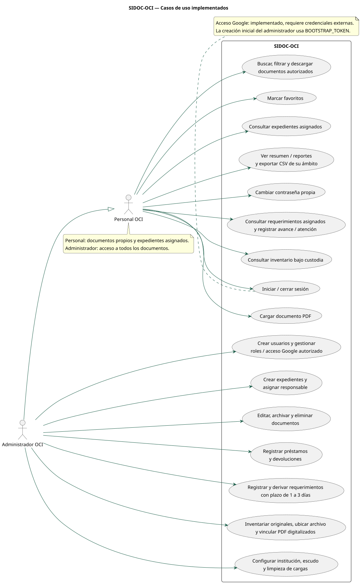
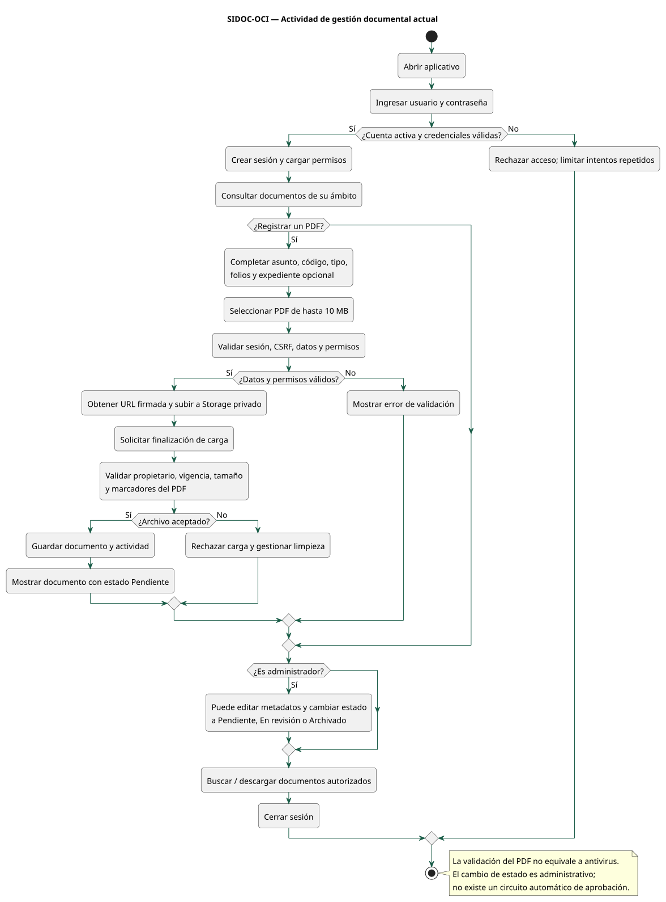
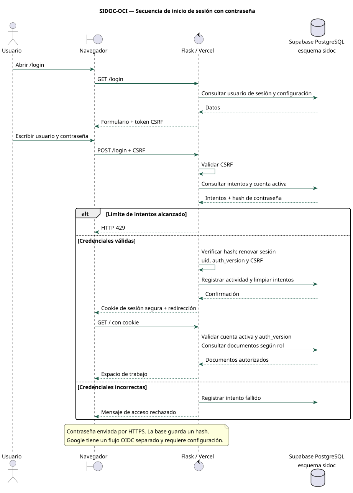
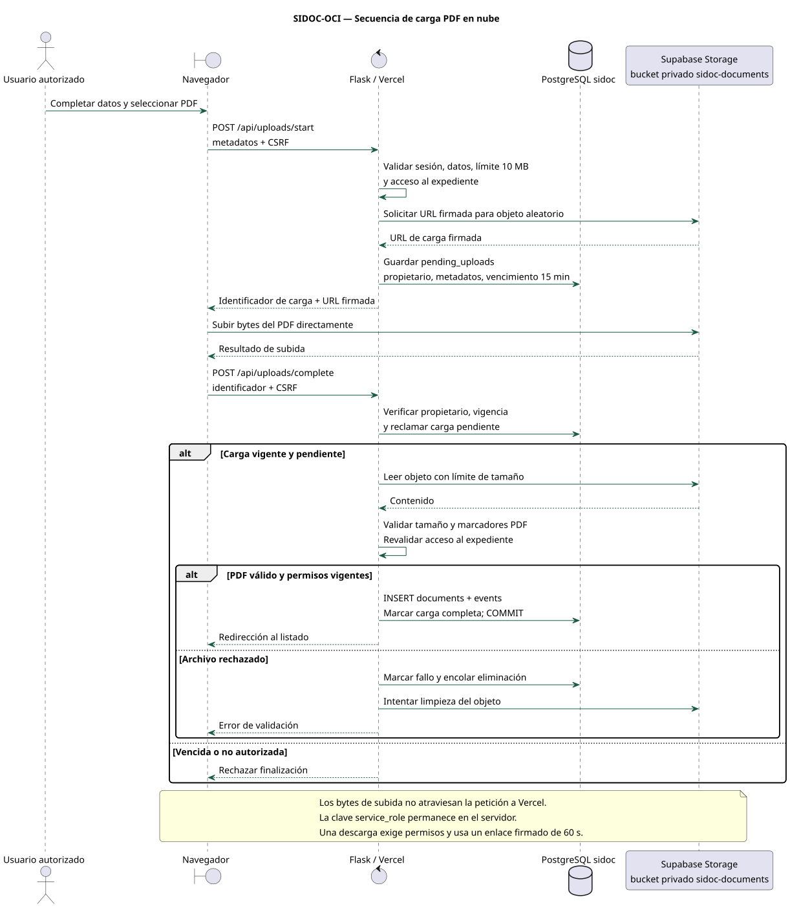
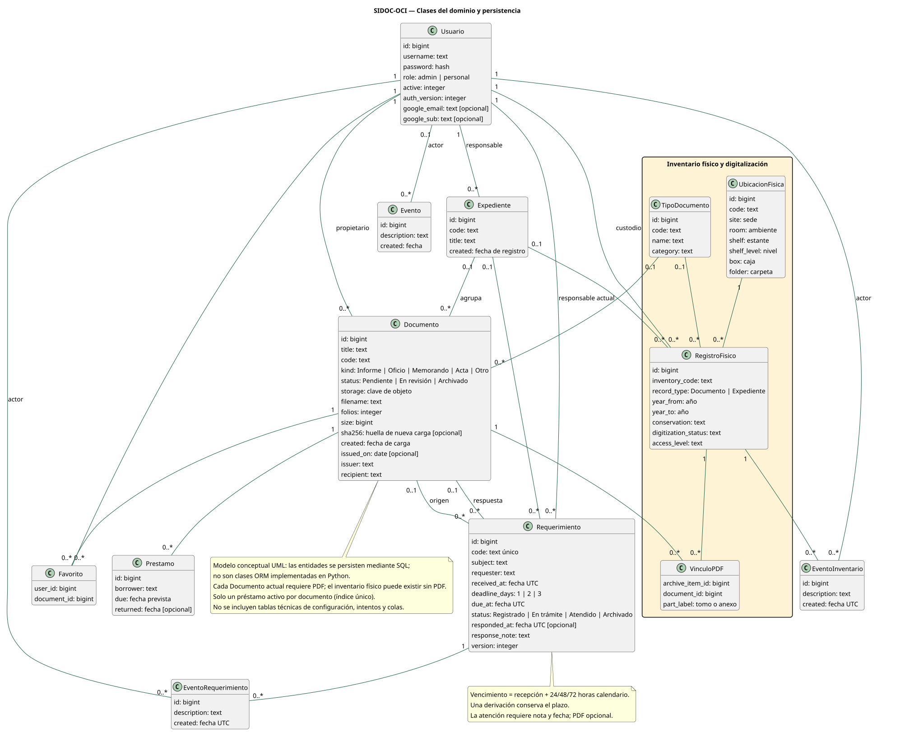
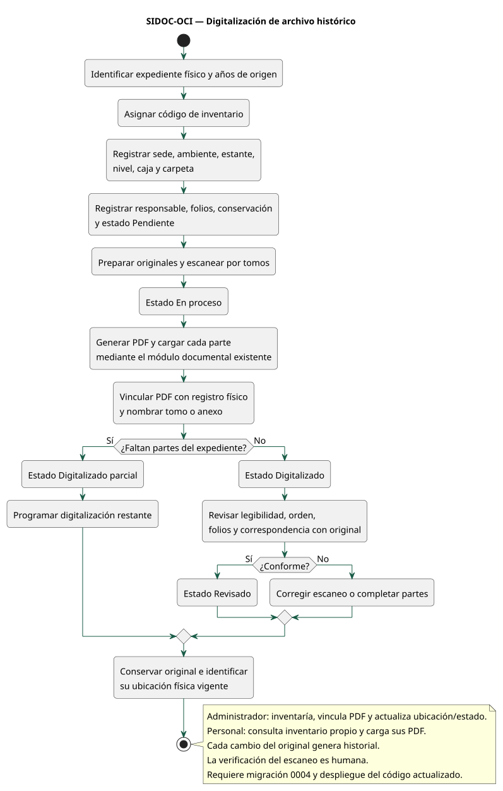
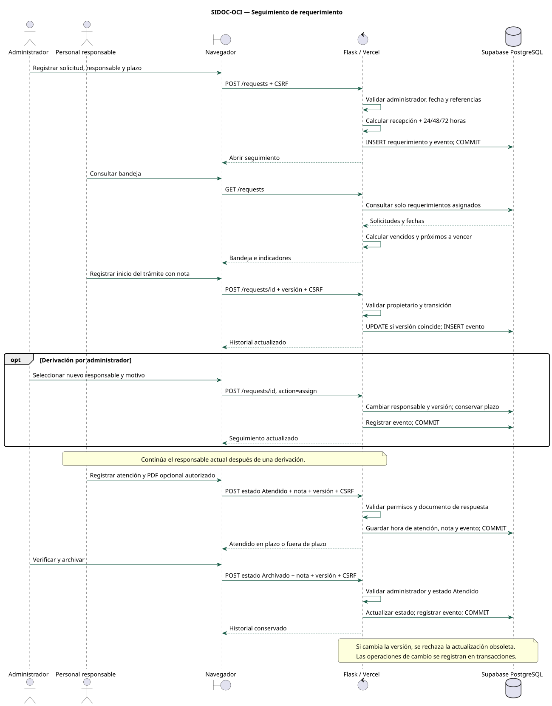
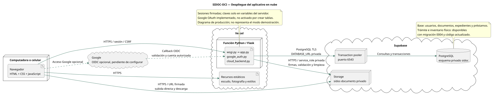

Diagramas UML · 1 de noviembre de 2026
Basados en el código del proyecto. Google requiere configuración externa. El inventario físico y el seguimiento de requerimientos están implementados en el código actualizado, pendientes de migración 0004 y despliegue en producción. Las clases representan el dominio y sus relaciones, no clases ORM del código Python.
Para exportar este informe: Ctrl+P → Guardar como PDF. Los diagramas también están disponibles como PNG, SVG y fuentes PlantUML.
Define los actores y sus operaciones. El administrador hereda las funciones del personal y dispone de gestión global. El personal consulta sus documentos y expedientes asignados; no administra cuentas ni modifica documentos existentes.
Trazabilidad: app.py: protected, scope, document, expedients, users, loans y configuration; workflow.py: trámite e inventario.

Describe el recorrido de acceso, carga, validación y consulta de PDF. La clasificación por estados es una acción administrativa, no un circuito automático de aprobación.
Trazabilidad: app.py: login, upload_start, upload_complete, edit_document y download.

Muestra la interacción con PostgreSQL, la verificación del hash y la creación de sesión. Google utiliza otro flujo, implementado pero pendiente de credenciales externas.
Trazabilidad: app.py: load_user y login; google_auth.py para el flujo alternativo.

El navegador sube directamente a Storage con una URL firmada. El servidor verifica el archivo antes de registrar el documento; las credenciales de Storage no se entregan al navegador.
Trazabilidad: app.py: upload_start y upload_complete; cloud_backend.py: PrivateStorage.

Modelo conceptual de entidades persistidas mediante SQL, no de clases ORM Python. Incluye multiplicidades y la relación de varios PDF con un original físico. El bloque amarillo corresponde al inventario físico; incluye requerimientos e historiales incorporados por la actualización 0004.
Trazabilidad: supabase/migrations/0001_sidoc.sql, 0002_google_oauth.sql y 0003_archivo_historico.sql.

Distingue inventariar un original sin PDF, digitalizar por partes y verificar el resultado. El código actualizado incorpora los formularios de inventario, vinculación de PDF y cambios de ubicación; requiere instalar 0004 y desplegarlo.
Trazabilidad: supabase/migrations/0003_archivo_historico.sql y docs/ARCHIVO-HISTORICO.md.

Describe registro, asignación, derivación sin reiniciar plazo, atención y archivo. Las versiones impiden sobrescribir cambios concurrentes.
Trazabilidad: workflow.py y supabase/migrations/0004_tramite_oci.sql.

Presenta navegador, función Flask en Vercel, PostgreSQL mediante pooler y Storage privado. Google se representa como integración opcional pendiente de activar.
Trazabilidad: wsgi.py, app.py, cloud_backend.py, google_auth.py y docs/VERCEL-SUPABASE.md.
